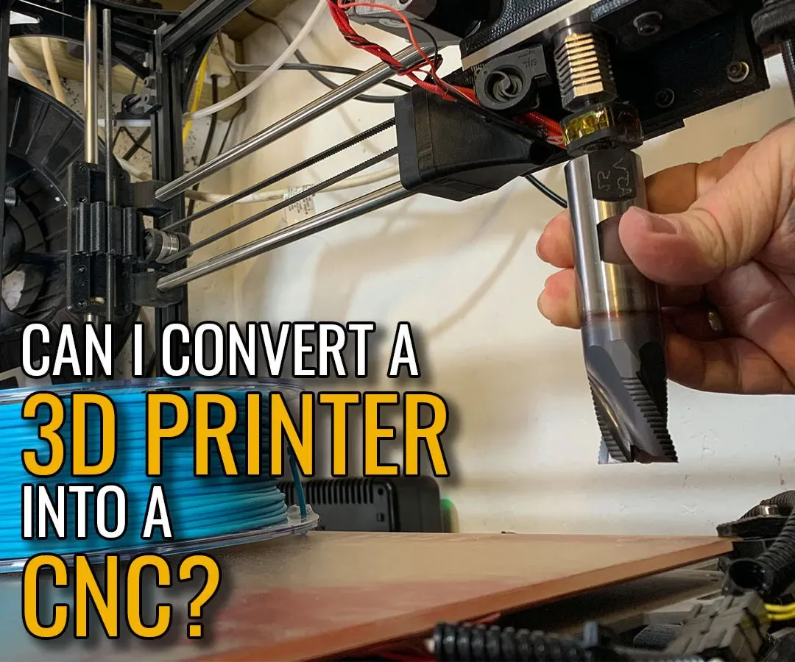

Convert an older 3D printer into a light-duty CNC machine
- The author tests the idle printer's three axes, removes extrusion hardware and adds a separately powered spindle and tool for light cutting.

- Record L44
- Sources reviewed 2026-10-21
- Hands-on status No KitAgain hands-on hardware test
- 0/5 dimensions have verifiable sources
- The current review supports only docs/community. Other dimensions remain null, so fewer than three evidenced dimensions means this route is not yet rated.
Decide before you build
- Current stage The author tests the idle printer's three axes, removes extrusion hardware and adds a separately powered spindle and tool for light cutting.
- Practical readiness A learning route for foam, wax, soft wood and other light work, not assumed metal milling.
- User value Reuses the three-axis platform while exposing the limits caused by changing the machine's process.
- Follow-up recommendation Continue with machining safeguards and light-cut expectations; repair a still-useful printer first.
Device fit and limits
Known fit or worth checking
- Idle Cartesian printers with reliable mechanics
- Low-load engraving and learning on soft materials
Not established or unsuitable
- Heavy metal cutting or unattended operation
- Loose mechanisms or exposed wiring without emergency stop
Gaps, next step, and risk
- Why it remains E0 Printer frames, bearings and dust protection are usually unsuitable for heavy machining; accuracy, materials and emergency stop need device-specific tests.
- Next review step Begin with shallow cuts in soft stock and measure rigidity, runout, dust, limits, emergency stop and electrical noise.
- Risk and stop condition Rotating tools can eject debris; use eye protection, clamps, guarding, extraction and an accessible emergency stop.
What each link contains
- Eight-step CNC conversion ↗step-by-step-tutorialDocuments old-machine testing, mechanical changes, separate spindle and initial machining route.https://www.instructables.com/Turn-an-Old-3D-Printer-Into-a-CNC-Machine/